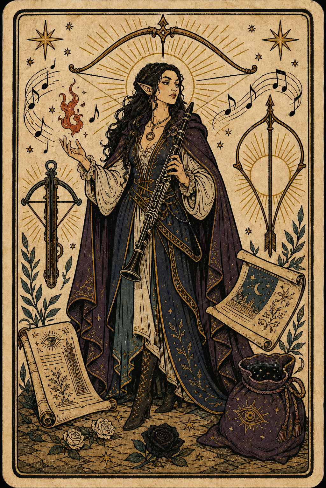

Liz
Elf / Bard (Lore) / Level 5
Edit OverviewEdit
Edit AbilitiesEdit
Edit CombatEdit
Weapon Attacks
Edit Combat StatsEdit
Edit HealthEdit
Edit AbilitiesEdit
Saving Throws
Skills
Class Features
Bardic Inspiration Bard / Level 1 / Bonus Action / Bardic Inspiration
You can inspire others through stirring words or music. To do so, you use a bonus action on your turn to choose one creature other than yourself within 60 feet of you who can hear you. That creature gains one Bardic Inspiration die, a d6. Once within the next 10 minutes, the creature can roll the die and add the number rolled to one ability check, attack roll, or saving throw it makes. The creature can wait until after it rolls the d20 before deciding to use the Bardic Inspiration die, but must decide before the DM says whether the roll succeeds or fails. Once the Bardic Inspiration die is rolled, it is lost. A creature can have only one Bardic Inspiration die at a time. You can use this feature a number of times equal to your Charisma modifier (a minimum of once). You regain any expended uses when you finish a long rest. Your Bardic Inspiration die changes when you reach certain levels in this class. The die becomes a d8 at 5th level, a d10 at 10th level, and a d12 at 15th level.
Spellcasting Bard / Level 1 / Triggered
You have learned to untangle and reshape the fabric of reality in harmony with your wishes and music. Your spells are part of your vast repertoire, magic that you can tune to different situations. See chapter 10 for the general rules of spellcasting and chapter 11 for the bard spell list. Cantrips: You know two cantrips of your choice from the bard spell list. You learn additional bard cantrips of your choice at higher levels, learning a 3rd cantrip at 4th level and a 4th at 10th level. Spell Slots: The Bard table shows how many spell slots you have to cast your bard spells of 1st level and higher. To cast one of these spells, you must expend a slot of the spell's level or higher. You regain all expended spell slots when you finish a long rest. For example, if you know the 1st-level spell cure wounds and have a 1st-level and a 2nd-level spell slot available, you can cast cure wounds using either slot. Spells Known of 1st Level and Higher: You know four 1st-level spells of your choice from the bard spell list. You learn an additional bard spell of your choice at each level except 12th, 16th, 19th, and 20th. Each of these spells must be of a level for which you have spell slots. For instance, when you reach 3rd level in this class, you can learn one new spell of 1st or 2nd level. Additionally, when you gain a level in this class, you can choose one of the bard spells you know and replace it with another spell from the bard spell list, which also must be of a level for which you have spell slots. Spellcasting Ability: Charisma is your spellcasting ability for your bard spells. Your magic comes from the heart and soul you pour into the performance of your music or oration. You use your Charisma whenever a spell refers to your spellcasting ability. In addition, you use your Charisma modifier when setting the saving throw DC for a bard spell you cast and when making an attack roll with one. Spell: Spell: Ritual Casting: You can cast any bard spell you know as a ritual if that spell has the ritual tag. Spellcasting Focus: You can use a musical instrument as a spellcasting focus for your bard spells.
Jack of All Trades Bard / Level 2 / Passive
Starting at 2nd level, you can add half your proficiency bonus, rounded down, to any ability check you make that doesn't already include your proficiency bonus.
Magical Inspiration Bard / Level 2 / Passive / Bardic Inspiration
2nd-level bard optional class features If a creature has a Bardic Inspiration die from you and casts a spell that restores hit points or deals damage, the creature can roll that die and choose a target affected by the spell. Add the number rolled as a bonus to the hit points regained or the damage dealt. The Bardic Inspiration die is then lost.
Song of Rest (d6) Bard / Level 2 / Triggered
Beginning at 2nd level, you can use soothing music or oration to help revitalize your wounded allies during a short rest. If you or any friendly creatures who can hear your performance regain hit points by spending Hit Dice at the end of the short rest, each of those creatures regains an extra 1d6 hit points. The extra hit points increase when you reach certain levels in this class: to 1d8 at 9th level, to 1d10 at 13th level, and to 1d12 at 17th level.
Bard College Bard / Level 3 / Passive
At 3rd level, you delve into the advanced techniques of a bard college of your choice from the list of available colleges. Your choice grants you features at 3rd level and again at 6th and 14th level.
Expertise Bard / Level 3 / Passive
At 3rd level, choose two of your skill proficiencies. Your proficiency bonus is doubled for any ability check you make that uses either of the chosen proficiencies. At 10th level, you can choose another two skill proficiencies to gain this benefit.
Bonus Proficiencies Lore / Level 3 / Triggered
When you join the College of Lore at 3rd level, you gain proficiency with three skills of your choice.
College of Lore Lore / Level 3 / Passive
Bards of the College of Lore know something about most things, collecting bits of knowledge from sources as diverse as scholarly tomes and peasant tales. Whether singing folk ballads in taverns or elaborate compositions in royal courts, these bards use their gifts to hold audiences spellbound. When the applause dies down, the audience members might find themselves questioning everything they held to be true, from their faith in the priesthood of the local temple to their loyalty to the king. The loyalty of these bards lies in the pursuit of beauty and truth, not in fealty to a monarch or following the tenets of a deity. A noble who keeps such a bard as a herald or advisor knows that the bard would rather be honest than politic. The college's members gather in libraries and sometimes in actual colleges, complete with classrooms and dormitories, to share their lore with one another. They also meet at festivals or affairs of state, where they can expose corruption, unravel lies, and poke fun at self-important figures of authority.
Cutting Words Lore / Level 3 / Reaction / Bardic Inspiration
Also at 3rd level, you learn how to use your wit to distract, confuse, and otherwise sap the confidence and competence of others. When a creature that you can see within 60 feet of you makes an attack roll, an ability check, or a damage roll, you can use your reaction to expend one of your uses of Bardic Inspiration, rolling a Bardic Inspiration die and subtracting the number rolled from the creature's roll. You can choose to use this feature after the creature makes its roll, but before the DM determines whether the attack roll or ability check succeeds or fails, or before the creature deals its damage. The creature is immune if it can't hear you or if it's immune to being charmed.
Ability Score Improvement Bard / Level 4 / Triggered
When you reach 4th level, you can increase one ability score of your choice by 2, or you can increase two ability scores of your choice by 1. As normal, you can't increase an ability score above 20 using this feature. If your DM allows the use of feats, you may instead take a feat.
Bardic Versatility Bard / Level 4 / Triggered
4th-level bard optional class features Whenever you reach a level in this class that grants the Ability Score Improvement feature, you can do one of the following, representing a change in focus as you use your skills and magic: Replace one of the skills you chose for the Expertise feature with one of your other skill proficiencies that isn't benefiting from Expertise. Replace one cantrip you learned from this class's Spellcasting feature with another cantrip from the bard spell list.
Bardic Inspiration (d8) Bard / Level 5 / Passive / Bardic Inspiration
At 5th level, your Bardic Inspiration die changes to a d8.
Font of Inspiration Bard / Level 5 / Triggered / Bardic Inspiration
Beginning when you reach 5th level, you regain all of your expended uses of Bardic Inspiration when you finish a short or long rest.
Sheet Feature Notes
No extra class features recorded.